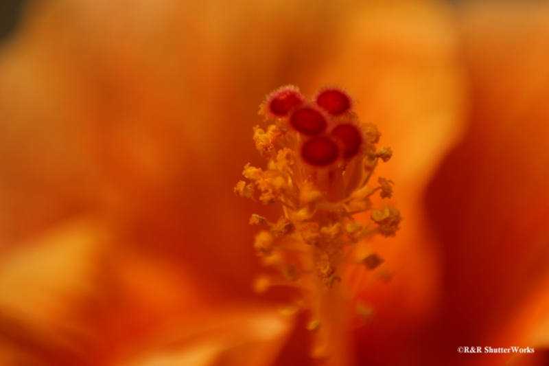

R&R ShutterWorks
Tushar Kanti MishraR&R ShutterWorks was born from a simple belief — that every moment has a story worth preserving. What started as a passion for capturing authentic emotion and fleeting beauty has evolved into a creative studio dedicated to timeless, impactful photography.
We see photography as more than just taking pictures. It’s about seeing — noticing the subtle interplay of light, expression, and atmosphere that defines a moment. Whether it’s an intimate portrait, a grand celebration, or the quiet power of nature, we aim to capture it with honesty and artistry.
At R&R ShutterWorks, we specialize in:
- Portrait Photography
- Event Photography
- Landscape Photography
Our philosophy is simple: real moments, refined results.
Every image we create is guided by precision, creativity, and heart — so what you remember isn’t just how it looked, but how it felt.
Because at R&R ShutterWorks, we don’t just take photographs — we craft memories that last.
One of our notable clicks
